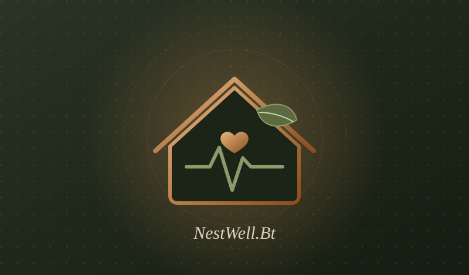
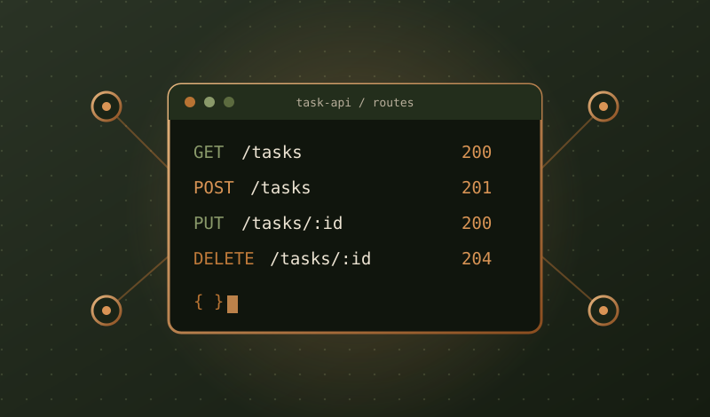
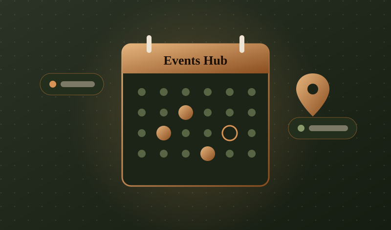
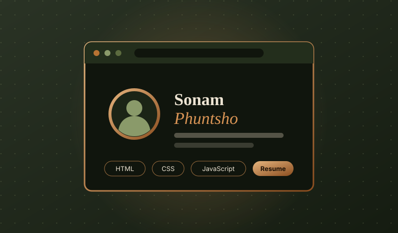

— 04 · Projects
Featured Work.
A collection of things I've built, broken, and learned from. Each project represents a step in my journey as a developer.

NestWell.Bt
A comprehensive web application project designed to provide a seamless user experience.

Task APIs
A backend development project focused on building RESTful API endpoints, handling requests, and managing task data using JavaScript and Express.js.

Events Hub
A college events website designed to help students discover, explore, and keep track of upcoming college activities.

Student Portfolio
A personal portfolio website developed to showcase my technical skills, projects, certificates, and academic journey.